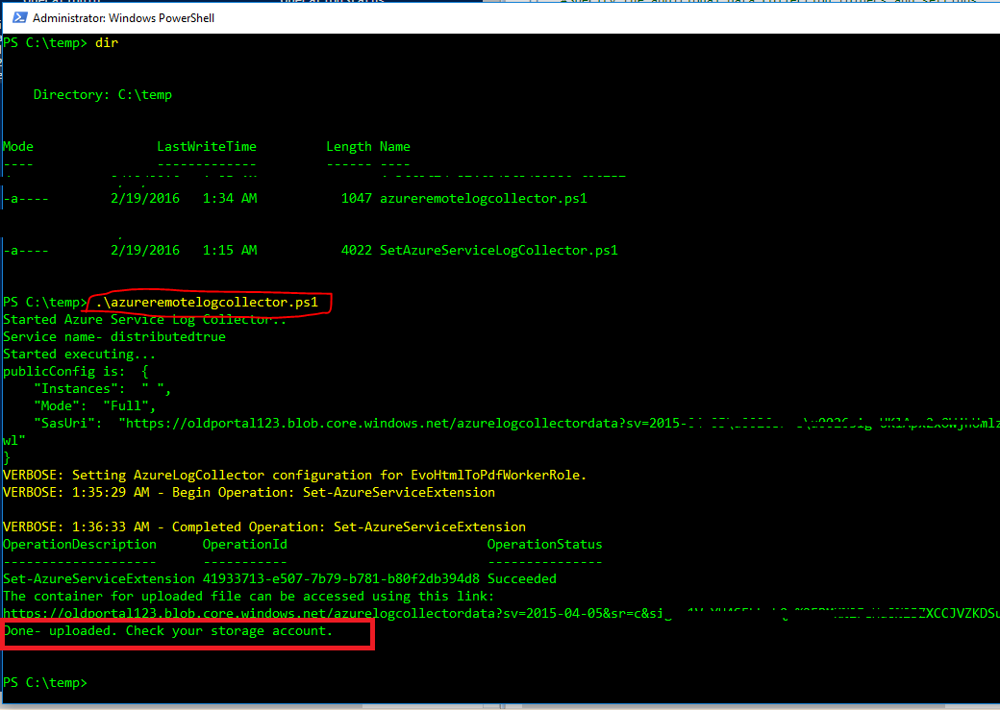
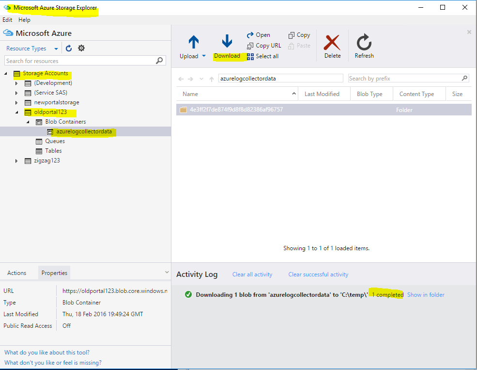
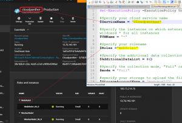

Issue:
How to collect the "Azure Cloud Services instances(VM) logs" when we are unable to RDP or connection failed for some reason. Infact, we can try when RDP not configured etc. Just in case, If we see RDP working, then we can use this tool in VM directly after logging in-
http://dsazure.blob.core.windows.net/azuretools/AzureTools.exe
The below solution is useful when we are unable Remote desktop(RDP) into Azure Cloud Service VM machines.
Solution:
I am trying to simplify
this blog post and also
adding those missing script location for quicker reference.
Step 1: Download this
<click here> scripts to your c:\temp. [ AzureRemotelogcollector.ps1, SetAzureServiceLogCollector.ps1 ]
Step 2: Extract the files to the location say C:temp and update the required details in this file -AzureRemotelogcollector.ps1 { make sure to enter cloud services name, role and more importantly working storage account :) }
Step 3: Launch the Powershell in admin mode ( how to launch any exe in admin mode easily refer
here )
Step 4: Run this cmdlet to access your subscription PS C:\windows\system32>
Add-AzureAccount
Step 5: Navigate to our script file location path and then type the filename for execution PS C:\temp>
.\AzureRemotelogcollector.ps1

Step 6: Now its ready for download. You can use this free tool
http://storageexplorer.com/ to download these log files

Let me know if you run into any issues..
Related links:-
Configure your Azure Subscription with the Azure PowerShell Cmdlets.
Regarding troubleshooting tools- refer Kwill's blog - here
P.s: I do not author these scripts. Thanks to this site for hosting this script site.
<Updated 4/8/2016: Added screenshot explaining the input params>

{kind=link}
{kind=link}
{kind=link}